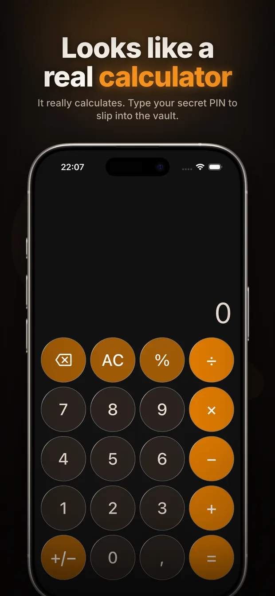

How to hide photos on Android
Android gives you more built-in options than iOS — Google Photos has a Locked Folder, and Samsung ships Secure Folder. Both are good. Both also have the same tell: they are visibly a place where private things are kept.
Option 1: Locked Folder in Google Photos
- Open Google Photos and go to Collections (or Library) → Utilities.
- Tap Locked Folder and set it up with your screen lock.
- Select photos, tap the three-dot menu, and choose Move to Locked Folder.
Items in the Locked Folder do not appear in your grid, in search, in Memories, or in shared albums. They are also excluded from backup by default, which is worth knowing both ways: private, but not recoverable if the phone dies.
Option 2: Secure Folder (Samsung)
On Galaxy phones, Settings → Security and privacy → Secure Folder creates a separate encrypted space with its own apps and gallery, backed by Samsung Knox. It is the strongest option on Android in pure security terms.
Its drawback is visibility: Secure Folder appears as an app icon, and hiding that icon is itself a setting people know to check.
Option 3: an app that does not look like a vault
If the concern is not a stranger with forensic tools but a person who might pick up your phone, the useful property is not encryption strength — it is that nothing suggests there is anything to open.

Calculator Vault is a functioning calculator on your home screen. Typing your secret PIN on the keypad opens a private vault for photos, videos and files. There is no lock icon and no second profile — just an app nobody has a reason to open.
Setting it up
- Install Calculator Vault from Google Play.
- Set your PIN on first launch, then save your recovery code or security questions. Nothing is stored on a server, so those are the only way back in.
- Import from your gallery, or shoot directly inside the app.
- Delete the originals and empty your gallery's Trash — on most Android phones deleted photos sit there for 30 days.
Two things to check on Android
Google Photos backup
If backup is on, a photo you moved into a vault app may already be in your Google account. Moving the local copy does not remove the cloud copy. Check photos.google.com and delete it there too, including from the Bin.
The .nomedia trick is not privacy
Renaming a folder with a leading dot, or dropping a .nomedia file in it, only stops the gallery from indexing it. Any file manager still lists the files, and anyone who has heard of the trick will look. It hides from software, not from people.
Which to pick
For protection against a lost or stolen phone, Samsung Secure Folder or the Locked Folder are excellent and you should use them. For protection against the person sitting next to you, the calculator approach is the one that works — because the safest hiding place is the one nobody realises is a hiding place.
Frequently asked questions
Where is the Locked Folder in Google Photos?
Open Google Photos, go to Collections or Library, then Utilities, and tap Locked Folder. It unlocks with your screen lock.
Are Locked Folder photos backed up?
No, not by default. That keeps them private but also means they are gone if you lose or reset the phone, so keep a separate copy of anything irreplaceable.
Does hiding photos with .nomedia actually work?
Only against the gallery app. A .nomedia file stops media scanning, but any file manager still shows the files and the trick is widely known.
Is Secure Folder better than a calculator vault app?
For raw security against a stolen device, yes — it is hardware-backed by Samsung Knox. But it is visible as a Secure Folder, so it does not help when the concern is someone who already has your unlocked phone.
Will my hidden photos still be in Google Photos?
If backup was on when the photo was taken, a copy is in your Google account regardless of what you do locally. Delete it at photos.google.com and empty the Bin.